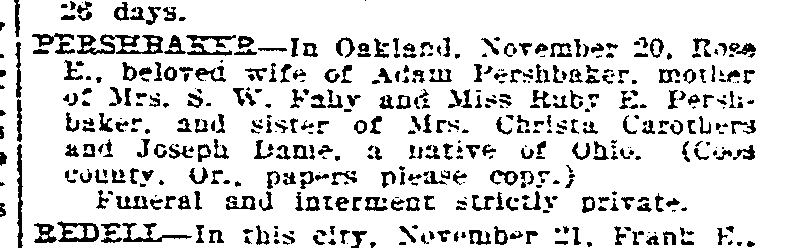

Rosella Dame d. 1913
3× great-grandmother of Genevieve Elisa Symanski Nelson, wife of Peter.
Rosella Dame. She died on 20 Nov 1913 in California, United States1.
Family
- Partner
- Adam Pershbaker 1838–1917
- Children
- Ruby Pershbaker d. 1973 documented
Life events
| Event | Date | Place and details |
|---|---|---|
| Died | 20 Nov 1913 | California, United States1 |
Records

Sources
- Death Notice: Pershbaker — Rose E., San Francisco Chronicle (San Francisco, California), 22 November 1913, p. 19.
PERSEBASETR—In Oakland. November 20. Rop-e K. , beloved wife of Adam Pershbaker. mother of Mrs. c>. W. Kahy and Miss Ruby E. Persli- baker. aud sister of Mrs. Christa Carothers and Joseph Dame, a native of Ohio. (Coo* county. Or., pap-rs please copy.) Funeral and interment strictly private.
Translation: PERSHBAKER—In Oakland, November 20, Rose E., beloved wife of Adam Pershbaker, mother of Mrs. S. W. Fahy and Miss Ruby E. Pershbaker, and sister of Mrs. Christa Carothers and Joseph Dame, a native of Ohio. (Coos county, Or., papers please copy.) Funeral and interment strictly private.
Died 20 November 1913 in Oakland, Alameda County, California; native of Ohio; beloved wife of Adam Pershbaker; mother of Mrs. S. W. Fahy and Miss Ruby E. Pershbaker; sister of Mrs. Christa Carothers and Joseph Dame; funeral and interment strictly private (Coos County, Oregon papers requested to copy).